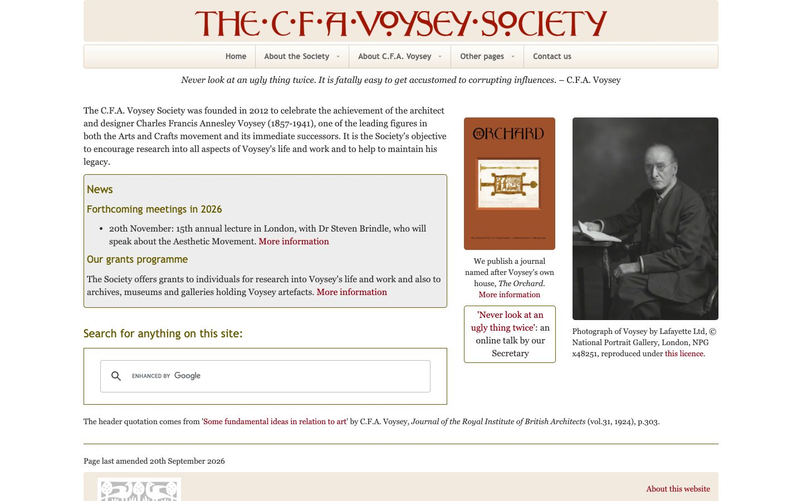

References / Website / 133
C. F. A. Voysey Society website
A plain society site that takes its title lettering, its red, and its cream from Voysey himself, and frames its news in thin olive rules.
- Source
- voyseysociety.org
- Creator
- The C. F. A. Voysey Society
- Style
- Arts and Crafts (agent-proposed, not yet reviewed by a person)
- Moods
- Earnest, plain, scholarly
- Evidence
- Captured with
tools/capture.mjs(headless Chrome, 1440 × 900) on 28 September 2026 and inspected. The screenshot shows the first viewport; the measurement covers up to four screens. - Reviewed
- Rights
- Third-party work, stored with credit for commentary. License: unverified. Rights policy
Observed
- The title “THE·C·F·A·VOYSEY·SOCIETY” runs across a cream band in dark red hand-drawn capitals with small round letters set high and middle dots between words.
- Below it a pale navigation bar with a slight gradient holds grey sans-serif labels divided by thin vertical rules.
- An italic serif quotation from Voysey is centred under the navigation.
- Body text is a dark old-style serif on white. Links are dark red.
- The News box and the search box have thin olive rules; the News box has a light grey ground. Headings inside it are olive sans-serif.
- The right column shows the orange-brown cover of the Society’s journal, The Orchard, and a black-and-white photograph of Voysey.
Why it belongs
The site shows the style with almost no pattern: red lettering, a serif text face, italic for the quotation, and rules. That supports the rubric’s type and colour traits more than its pattern trait.
Measured: two chromatic hues, accent chroma 0.54, no shadows, no capitals in the running text (the title is an image), and 1 px borders. It fails only color.patternShare.
Borrow
Draw the title in a single dark red with middle dots between words, and leave the rest of the page in a plain serif.
Frame secondary content in a thin rule of a dye colour such as olive instead of a card with a shadow.
Measured
Machine-extracted by tools/extract-traits.js on . Full measurement.
- Type families
- Georgia (90%), Trebuchet MS (10%)
- Type scale ratio
- 1.12
- Median radius
- 0 px
- Mean chroma
- 0.04
- Palette
- #ffffff 59%
- #f3eadf 21%
- #333333 15%
- #970012 3%
- #695c00 1%
- #666666 1%

